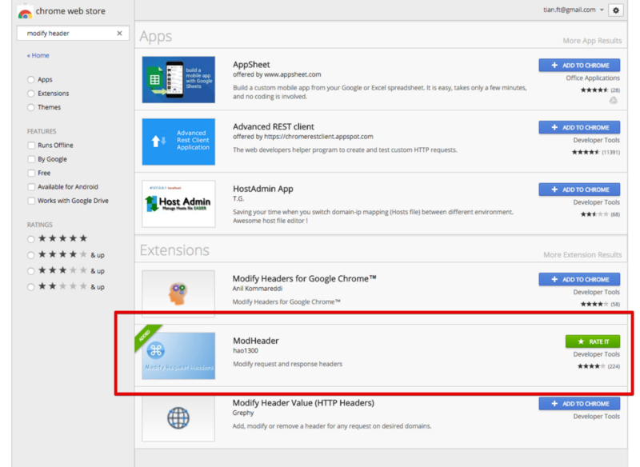
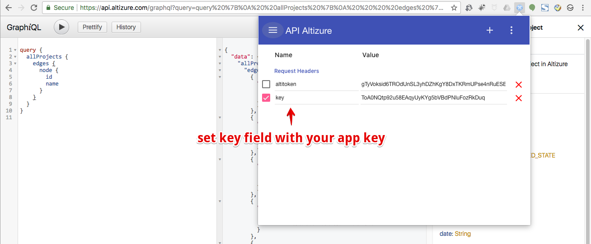
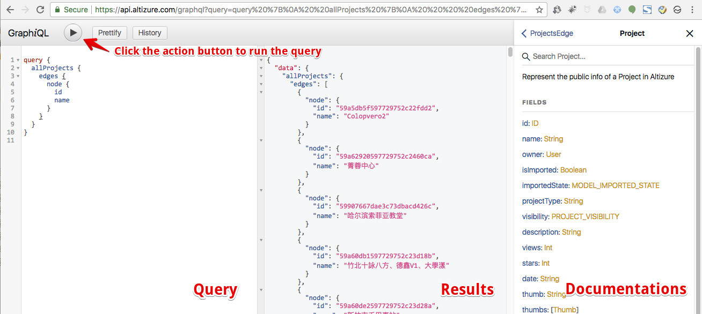

Altizure Graphql API
Altizure GraphQL API is a set of API in the syntax of GraphQL. The API allows developers to fetch and modify the data on Altizure.
1. Prerequisite
- Altizure developer account
- App key
- User token (optional)
2. API Endpoint and Documentations
API endpoints and documentations: api.altizure.com/graphql.
3. Try out API in your browser
The above endpoint shows detailed documentation. However, you cannot execute the query or mutation that require your own app key and user token. Here is a tutorial on how to modify the http header in your browser to use your own app key and user token.
It is very convenience to test the API in browsers, because it provides instant feedback on the query results and detailed inline documentations. After the testing, you can easily copy and paste the query string to your code and trigger the API call.
We take Google Chrome as an example. Other browsers supporting extensions, e.g. Firefox, should work too.
Install extension
First, please install an extension that can modify the http request header. Here ModHeader is used. Please search and install ModHeader in the extension store of Google Chrome.

Modify http header
Please use ModHeader to add key field in request header with app key as the value.

Visit api.altizure.com/graphql after setting the key. You can find three sections: "query section", "result section", and "documentation", on the page.
Now please fill the following query string to the query section to calculate how many gigapixels there are in a set of images.
query {
utility {
sizeToGigaPixel(width: 4000, height: 3000, numImg: 100)
}
}
Please click the action button to get the query results. This api call will compute how many giga pixels there are in 100 images at 4000x3000 resolution.

4. Integrate the API in your code
The API can be called by any libs and programming languages that can issue a http post request.
For example:
JQurey in Javascript
$.ajax({
type: 'POST',
url: 'https://api.altizure.com/graphql',
headers: {
altitoken: 'user token',
key: 'app key'
},
data: 'query=' + 'GraphQL query string'
})
5. Obtain user token
User token is obtained via the standard OAuth 2 flow.
The authorization endpoint is the following url:
`https://api.altizure.com/auth/start?client_id=${appKey}&response_type=token&redirect_uri=${redirect_uri}`
where appKey is your application key, and redirect_uri is one of the domains associated with your application.
Your application needs to route/open this url. A form will be shown to your users asking for their authorizations. After your users have authorized the request, the page will be redirected back to your redirect_uri with a url hash variable of key: access_token.
For mobile application, the redirect_uri will be your application's bundle identifier name (iOS) or your package name (android).
For a vanilla JS implementation, please refer to here.
6. FAQ
6.1 How to access the api in Mainland China?
Please use https://api.altizure.cn/graphql. It is better to choose a reachable and faster endpoint whenever possible in the logic of your application instead of hardcoding the api endpoint.
6.2 Where to find more detailed documentations on GraphQL API
Please follow the above tutorial and browse api.altizure.cn/graphql with your browser. All documentations are embedded in the web frontend of our api endpoint.
7. Learn More
- Learn more about GraphQL
- Use Altizure Javascript SDK to developer rich 3D application
- More tools on GraphQL: Awesome GraphQL
Last modified at Tue May 28 2019 04:08:00 GMT+0000 (Coordinated Universal Time)